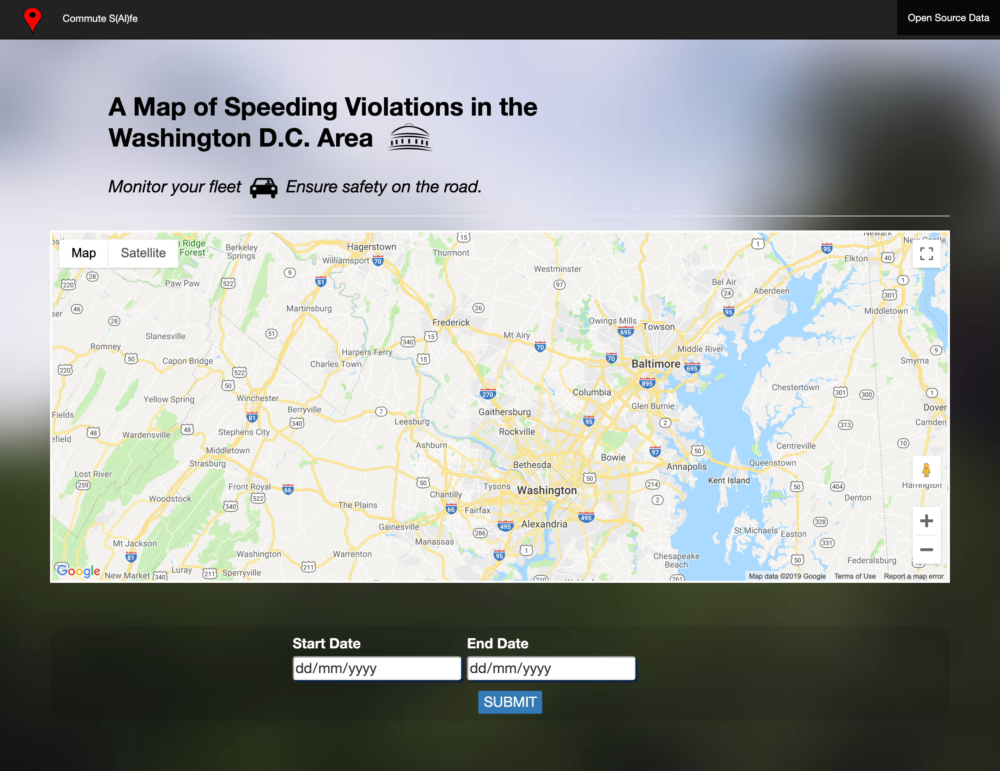
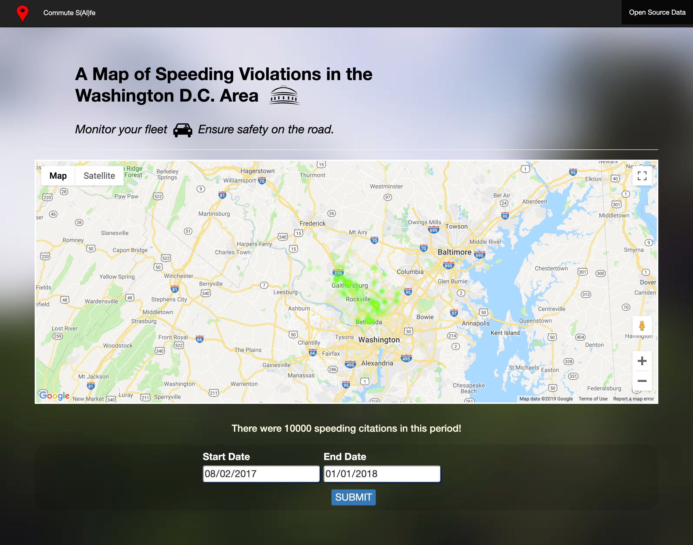

Hello! 👋 I’m Shallin Ris, and I'm a Fullstack Software Engineer currently based out of the San Francisco Bay Area.
I was drawn to software engineering because of its unique blend of art and science; a chance for me to utilize both my love of technology and creativity.
While I previously worked for tech companies in more client facing roles, my journey into the coding world began in 2016, when I signed up for an intensive coding bootcamp in Tel Aviv, itself a hot spot for technology and innovation. Here I gained a foundational knowledge of coding and its applications, and in culmination was honored to receive first place along with my teammates, for our project in a Google-sponsored Hackathon. The app, Commute S(ai)fe, identifies citation hotspots from mass scale law enforcement data (see link in portfolio), thus ensuring safer commutes for everyone.
For the past two years I have been coding mostly in Java, gaining a strong understanding of server-side architecture and object structure. I have recently turned my focus more towards the front-end, and am getting better at Javascript and React every day. Next I plan to learn Python, and accordingly, am curious about machine learning. I look forward to continuing to improve and apply my development skills in new and creative ways.
PillTracker provides an end-to-end solution for medication adherence and compliance. The product suite includes a mobile pill dispenser for patients and a web portal for clinicians to monitor and administer medications. I serve as the lead frontend developer for the portal.
Tech: React, Node.js, Webpack; PostgreSQL, Java, Spring Boot, Gradle, Docker, Swagger
Catch Rider matches horse owner and horse rider to ensure all horses get ridden when necessary. Whether at a horse show or at home, Catch Rider helps all to ensure...
Tech: TBD